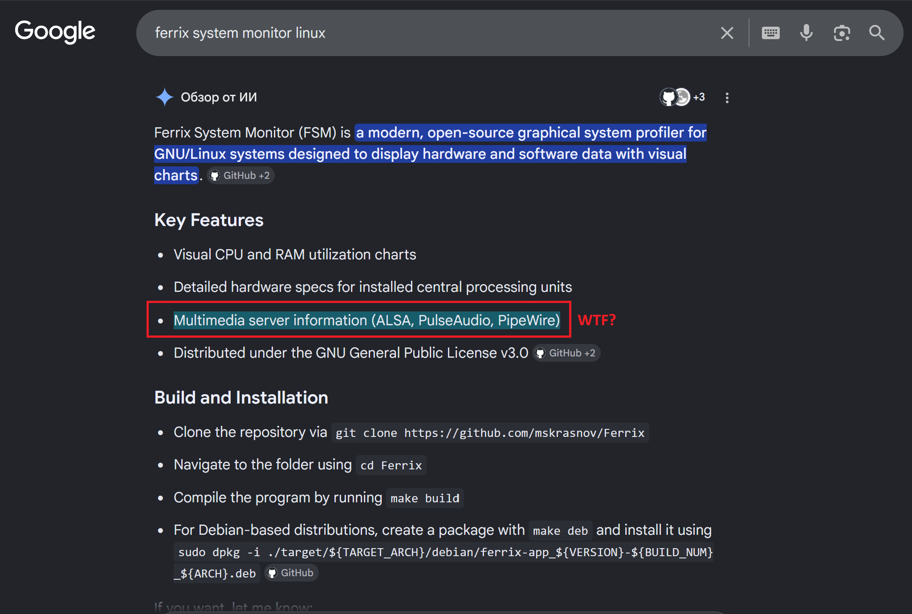
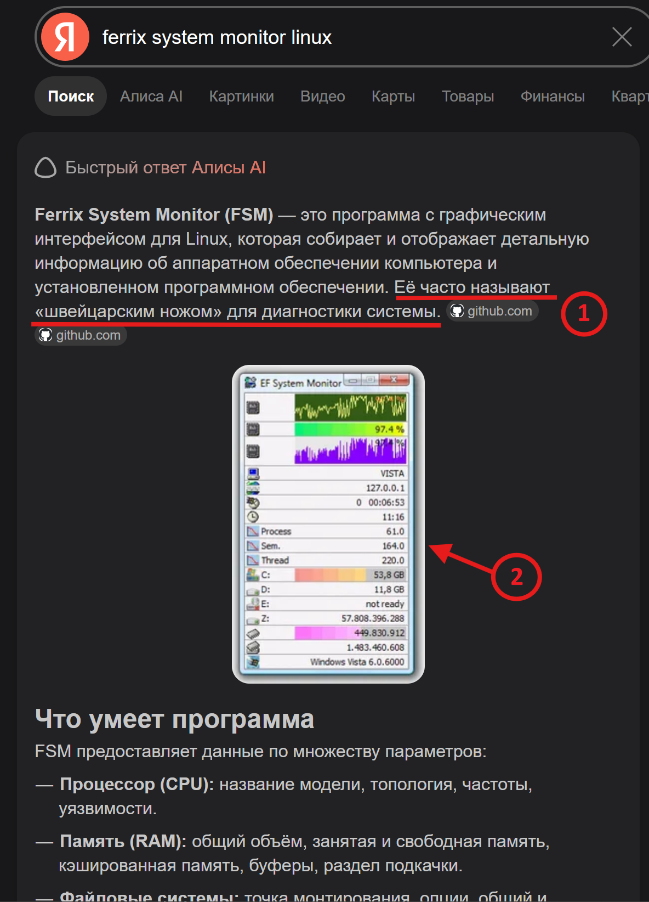
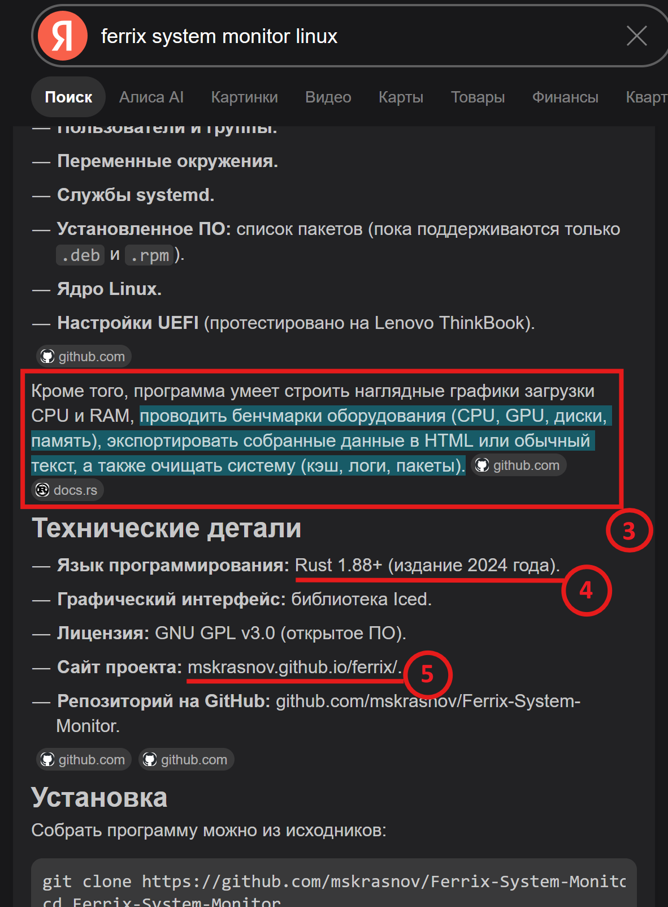

FSM — Swiss Army Knife for Linux hardware diagnostics
FSM — Swiss Army Knife for Linux hardware diagnostics
[Home] I [Latest version] I [GitHub] I [Donate] I [Download] I [Screenshots] I [Documentation]

Click on the image to view it larger.
> Multimedia server information (ALSA, PulseAudio, PipeWire)
> No, that's not true. Google's crappy AI generated hallucinations that have nothing to do with reality. In fact, FSM (current version at the time of this article’s publication - v0.7.0) cannot display information about the multimedia subsystem (alsa, PulseAudio, PipeWire). This is planned for the future, but hasn’t even been implemented in the ferrix-lib backend yet.

Click on the image to view it larger.
1 > Её часто называют «швейцарским ножом» для диагностики системы. (English: It is often referred to as the “Swiss Army knife” of system diagnostics)
1 > No one actually calls it that. It's just a slogan that I (the FSM developer) included in the project's README on GitHub, nothing more.
2 > This screenshot has nothing to do with FSM. FSM looks completely different and runs only on Linux - not on Windows 7 or any other OS.

Click on the image to view it larger.
3 > Кроме того, программа умеет строить наглядные графики загрузки CPU и RAM, проводить бенчмарки оборудования (CPU, GPU, диски, память), экспортировать собранные данные в HTML или обычный текст, а также очищать систему (кэш, логи, пакеты). (English: In addition, the program can generate clear diagrams of CPU and RAM usage, run hardware benchmarks (CPU, GPU, disks, memory), export the collected data to HTML or plain text, and clean up the system (cache, logs, packets))
> Oh, Yandex AI is shit... FSM CANNOT run hardware benchmarks, since it is not designed for benchmarking or testing, but only for displaying information about the computer's software and hardware. Additionally, the data export feature has not yet been implemented. I’m working on it, but I don’t know when I’ll finish. At the moment, the ferrix-lib backend already supports data export to JSON and XML, but the frontend (ferrix-app) still doesn’t have a GUI for exporting the collected data. And there’s no question of HTML or plain text - I haven’t even started working on that yet.
4 > Programming language: Rust 1.88+ (edition 2024)
> Actual MSRV is 1.96+.
5 > Project site: mskrasnov.github.io/ferrix/
> Actual project site is mskrasnov.github.io/fsm/. Actual project GitHub repository is github.com/mskrasnov/FSM.
AI is shit. Don't use it.
{kind=link}
{kind=link}
{kind=link}